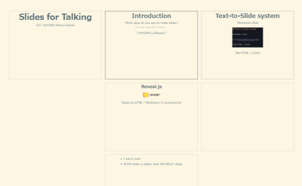

<!DOCTYPE html>
<html lang="en">
  <head>
    <meta charset="utf-8" />
    <meta name="viewport" content="width=device-width, initial-scale=1.0, maximum-scale=1.0, user-scalable=no" />

    <title>BES Final Presentation</title>
    <link rel="shortcut icon" href="./../favicon.ico" />
    <link rel="stylesheet" href="./../dist/reset.css" />
    <link rel="stylesheet" href="./../dist/reveal.css" />
    <link rel="stylesheet" href="./../_assets/theme/solarslide.css" id="theme" />
    <link rel="stylesheet" href="./../css/highlight/zenburn.css" />


  </head>
  <body>
    <div class="reveal">
      <div class="slides"><section  data-markdown><script type="text/template">

# Slides for Talking
with<br>


E37 2010383 Hikaru Suzuki

</script></section><section ><section data-markdown><script type="text/template">

## Introduction

What apps do you use to make slides?

<small>PowerPoint? Google Slides? Keynote? ...</small>

↑WYSWYG software↑<br><small>What You See is What You Get</small>


</script></section><section data-markdown><script type="text/template">

### Reveal.js


Making slides by TEXT

> reveal.js is an open source HTML presentation framework.

HTML / Markdown ←I recommend

</script></section><section data-markdown><script type="text/template">

* I use it now by markdown!

* WITH slides is better than WITHOUT slides

</script></section></section><section  data-markdown><script type="text/template">

## Text-to-Slide system

Markdown slide<br>


like HTML / LaTeX
<br>and **EASY**

→ Writing as Script

</script></section><section ><section data-markdown><script type="text/template">

## Nesting by Chapters



→ Writing as Chapter

</script></section><section data-markdown><script type="text/template">

### Only Reveal.js

Other softwares<br>
<small>PPT and other WYSWYG, Marp and other coded apps</small><br>
**NO** nesting like this.

</script></section></section><section  data-markdown><script type="text/template">

## Faster than PPT

**Less mouse moving**

**Prepared functions**
* Many Styles: easy to see Color/Font/Size
* Centering and Stretching

and so on...

→ Writing LESS than what you get

</script></section><section ><section data-markdown><script type="text/template">

## Conclusion

**Reveal.js is ...**

Converting easy script into beautiful slides

What You Write **becomes** What You Get

</script></section><section data-markdown><script type="text/template">

Write keywords of your talking

Change chapter by nesting

Prepare awesome slides in short time

with


</script></section><section data-markdown><script type="text/template">

OSS! Free!


</script></section></section><section  data-markdown><script type="text/template">

## References

* hakimel, Reveal.js, https://revealjs.com/
* NotePM, 【2022年版】Markdownでスライド作成できるツール・サービス × 14選<br>(14 tools to make slides with Markdown), https://notepm.jp/blog/5994

I use reveal-md(fork) for this slide:
* webpro, reveal-md, https://github.com/webpro/reveal-md</script></section></div>
    </div>

    <script src="./../dist/reveal.js"></script>

    <script src="./../plugin/markdown/markdown.js"></script>
    <script src="./../plugin/highlight/highlight.js"></script>
    <script src="./../plugin/zoom/zoom.js"></script>
    <script src="./../plugin/notes/notes.js"></script>
    <script src="./../plugin/math/math.js"></script>
    <script>
      function extend() {
        var target = {};
        for (var i = 0; i < arguments.length; i++) {
          var source = arguments[i];
          for (var key in source) {
            if (source.hasOwnProperty(key)) {
              target[key] = source[key];
            }
          }
        }
        return target;
      }

      // default options to init reveal.js
      var defaultOptions = {
        controls: true,
        progress: true,
        history: true,
        center: true,
        transition: 'default', // none/fade/slide/convex/concave/zoom
        plugins: [
          RevealMarkdown,
          RevealHighlight,
          RevealZoom,
          RevealNotes,
          RevealMath
        ]
      };

      // options from URL query string
      var queryOptions = Reveal().getQueryHash() || {};

      var options = extend(defaultOptions, {"transition":"convex","controls":true,"progress":true,"controlsTutorial":true,"slideNumber":true,"keyboard":true,"overview":true,"help":true,"pause":true,"mouseWheel":false,"pdfSeparateFragments":false,"helpButtonDisplay":"first","menu":{"side":"left","hideMissingTitles":true,"custom":[{"title":"About","icon":"<i class=\"fa fa-info\">","content":"<p><a href='https://suzukeh.github.io/myreveal/'>slides list</a></p><p><a href='https://github.com/Suzukeh/myreveal'>repository</a></p>"}]}}, queryOptions);
    </script>

    <script src="./../_assets/plugin/chalkboard/plugin.js"></script>
    <script src="./../_assets/plugin/toolbar/toolbar.js"></script>
    <script src="./../_assets/plugin/customcontrols/plugin.js"></script>
    <script src="./../_assets/plugin/helpbutton/helpbutton.js"></script>
    <script src="./../_assets/plugin/menu/menu.js"></script>
    <script src="./../_assets/plugin.js"></script>

    <script>
      Reveal.initialize(options);
    </script>
  </body>
</html>
